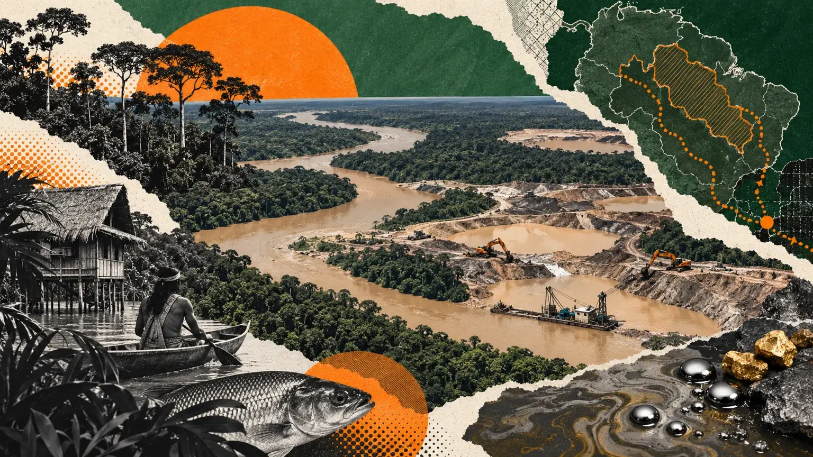

Giving Tuesday environmental giving and the fight against ecocide

An environmental donation should help you understand more than the landscape in an appeal. Who lives and works there? What is being damaged? What is the organization trying to change, and how will it know whether the work is useful? Giving Tuesday is a moment to ask those questions before choosing where to give.
At Not For Sale, the environmental part of the mission belongs alongside human freedom. We are interested in how people can sustain a living without exploitation and how the places they depend on can remain viable. That connection needs explanation. A picture of a forest, a planting total or the word “sustainable” cannot carry it on its own.
In this guide 15 sections
What this guide covers
- What ecocide means in this appeal.
- How environmental harm and exploitation can intersect.
- What ecosystem restoration and protection claims need to explain.
- Why local knowledge and participation matter to a donor’s assessment.
- How to interpret planting, land and carbon statements.
- Practical ways to contribute without overstating a result.
What we mean by ecocide
Ecocide is used here to describe severe destruction of ecosystems and the environmental harm central to Not For Sale’s mission. The term also appears in legal debate, but this guide is not making a legal finding about a particular activity or setting out the law in every jurisdiction. Our ecocide explainer provides wider organizational context. 19
For a donor, the useful next step is to move from the label to the actual circumstances. A campaign should identify the place or kind of ecosystem concerned, the damage it addresses and the response it proposes. The broader the promise, the more important it becomes to ask what the organization can reasonably deliver.
How environmental harm can connect with exploitation
There are at least two distinct questions. One concerns the work through which damage is carried out: are people being coerced or exploited in the activity? The other concerns the consequences for livelihoods: does damage reduce people’s options or contribute to displacement and insecurity? Those are different mechanisms and require different evidence.
Illegal mining provides a documented example of the first intersection. INTERPOL identifies links between illegal mining, environmental harm and abuses including trafficking and forced labor. UNEP’s resource summary on minerals crime also identifies these connections. Neither source supports treating all mining, all workers or all environmental offenses as the same situation. 17, 20
For the second question, the UN’s account of its 2024 trafficking report discusses climate-related pressures among contexts of vulnerability. The relationship should be described as a risk context, not a simple prediction that an environmental event will lead to trafficking. 16
Keep responsibility attached to the right actors
When an environmental activity is also a site of exploitation, an image of people carrying it out may tell only a small part of the story. Ask who controls the activity, who receives the returns and whether the people doing the work have meaningful choices. Do not assume that the most visible worker is the person making the decisions.
This is a question for evidence, not an excuse to invent a hidden explanation. A guide should distinguish what a source establishes from what remains unknown. The same discipline applies when discussing a community affected by environmental damage: people should not be portrayed only as passive victims waiting for an outside organization to act.
For readers considering a donation, the practical implication is to look for an approach that explains both environmental aims and human consequences. A response that changes one condition may create another problem if the account ignores how people earn a living or participate in decisions.
Restoration needs an explanation of the ecosystem
UNEP and its partners’ restoration principles emphasize local context, the use of different forms of knowledge, goals and monitoring. That provides a useful starting point for examining an appeal: the activity should make sense for the place and be assessed over time. 21
A donor can ask what condition the organization is trying to restore and why the proposed activity is suitable. Is the aim habitat recovery, protection of an existing ecosystem, repair of damage or support for a different land-use practice? These are not interchangeable descriptions.
Ask what happens after an initial activity. Who remains responsible? How is progress observed? What would cause the team to change its approach? A credible account should allow for learning and adjustment rather than suggesting that a single event completes the work.
Why people belong in the evidence
A statement that work is “community-led” should explain who participates and how decisions are made. Ask whether local knowledge informs the plan, how disagreements can be raised and who carries ongoing responsibilities. A photograph of a meeting does not answer those questions.
These are proposed donor questions, not a claim that every organization uses the same governance model. The point is to understand the relationship between the organization and the people whose lives are affected. If a campaign speaks about livelihoods, it should explain what it means by a viable livelihood and how that aim relates to the environmental work.
Avoid demanding that a community perform gratitude for donors. Evidence of participation and accountability is more useful than a promotional account in which every person appears to agree with the organization.
What a tree count can and cannot show
A planting count describes an activity under a particular counting method. It does not, by itself, tell you how many plants survived, whether the species were appropriate or whether an ecosystem recovered. It also does not establish that your personal emissions have been offset.
When a charity reports trees planted, ask for the period and the context. Is the figure annual or cumulative? Does it include partner activity? What follow-up information is available? You may find that the number is a useful part of the account once those questions are answered. The mistake is treating it as a complete account on its own.
| Claim in an appeal | Questions that make it more meaningful |
|---|---|
| Trees planted | Where, over what period, and with what follow-up |
| Land protected | What protection involves and who is responsible |
| Habitat restored | Which condition is measured and against what baseline |
| Communities supported | What support means and how people participate |
| Carbon benefit | What method, period and assumptions support the estimate |
| Sustainable livelihoods | What activity supports income and how its viability is assessed |
Be careful with carbon language
A general environmental donation is not automatically a carbon credit or a verified offset. If an appeal makes a specific offset claim, it needs its own explanation of the unit, method, verification and applicable terms. Do not infer those features from a planting photograph or a headline about restoration.
This hub does not offer an offset product or claim that a gift cancels a donor’s environmental impact. The invitation is to support the mission. Keeping that distinction clear prevents a straightforward charitable contribution from becoming a technical promise it was never designed to make.
Read the funding purpose
An environmental issue page can explain why a charity works in this area without creating a restricted appeal. Before donating, check whether the gift supports the organization as a whole or an agreed environmental activity. If an allocation matters to your decision, ask rather than assuming the subject of the page settles it.
For Not For Sale, this Giving Tuesday hub presents the wider mission. The official donation service’s terms and options govern the actual gift. The donation page provides a direct route and the essential questions to check.
Three ways to participate
Support work you can examine. Read the approach and reporting, then decide whether it is work you want to sustain. Use the questions above to understand a claim rather than selecting the appeal with the largest headline total.
Join an agreed local activity. Contact an organization that understands the place and ask about existing opportunities. Follow guidance on access, equipment and suitable work. Do not arrange planting or habitat intervention solely because it provides an attractive group activity.
Improve the information you share. When you repeat an environmental figure, include its source and timeframe. If you cannot explain what a number measures, link to the source instead of turning it into a stronger claim. A careful explanation can be useful to people making their own giving decisions.
An illustrative comparison
Imagine two appeals. One says it will plant a large number of trees. The other describes a smaller activity but explains the site, who is responsible and how progress will be monitored. The smaller number is not automatically the better choice, and the larger number is not automatically misleading. The second account simply gives you more information with which to begin an assessment.
Your next step is to ask the first organization for the missing context and examine the second organization’s evidence. This keeps the decision tied to the work rather than rewarding either scale or modesty as a substitute for substance.
The same approach applies to claims about land protected, people supported or environmental education. Compare definitions and purposes before comparing numbers.
What Not For Sale’s perspective adds
Our mission asks readers to consider people and ecosystems together. An environmental response should be understood alongside the choices available to those whose livelihoods depend on the place. An anti-trafficking response should examine the conditions that can make a person vulnerable as well as what happens after exploitation.
This does not make every environmental problem an anti-trafficking project. It gives our appeal a specific question to answer: how does the work contribute to a less exploitative way for people to live and earn a living? Read why support Not For Sale for the organizational approach and evidence.
Key points to keep
- Ecocide is used here as an environmental description, not a legal judgment.
- Some activities connect environmental harm with exploitation; evidence matters in each case.
- A planting count is one measure of activity, not a complete restoration outcome.
- Participation and ongoing responsibility deserve attention alongside landscape imagery.
- A charitable gift is not automatically an offset or restricted environmental contribution.
- Useful giving starts with an approach the donor can understand.